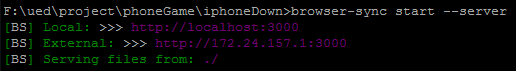
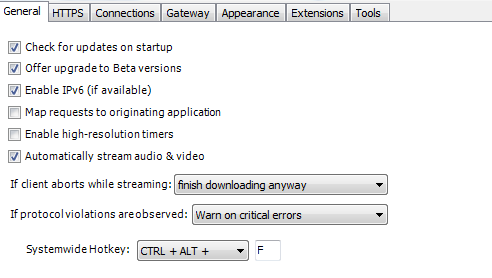
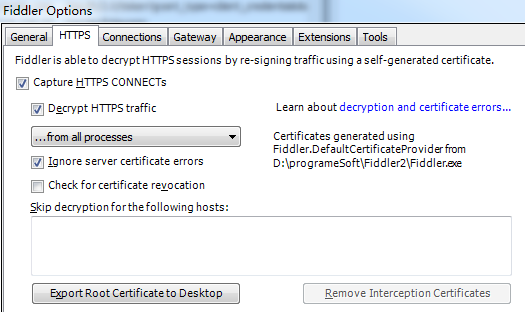
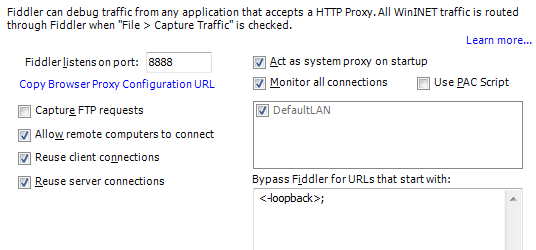
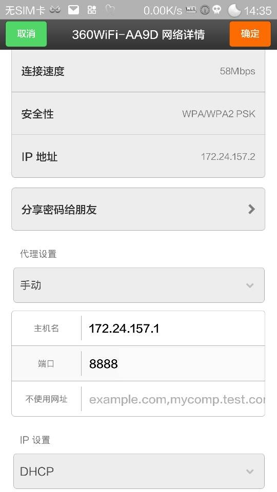

要在手机中调试mobile类型的页面，需要在本地机器上有服务端环境。比如php，nodeJS。这两种环境搭建相对比较简单。现在介绍nodeJS的环境：browsersync
1：机器上没有安装node.js，需自行安装
2：利用browsersync组件构建服务端环境。具体文档参考：browsersync
安装完browsersync，切换到项目目录，执行相应的命令即可。
在电脑上输入相应的网址，如图的External，通过二维码生成器生成当前网址二维码。chrome插件二维码生成器
在fiddler工具栏 Tools->Fiddler Options
  手机连接360wifi、百度wifi的账号，在网络详情页做代理设置为手动。
主机名为360wifi、百度wifi的IP，通过ipconfig可以获取（无线局域网适配器的IPV4 地址）
端口号：fiddler 设置
